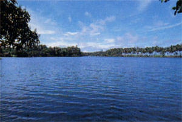

第３３ 敵兵の遺体のポケットにあった手紙
軍参謀部の電報班には秘密扱いの文書もあった。電報班の電報綴りの中には、軍事に関するものの外に色々の情報も綴じられて
いた。その中に、敵兵の手紙を翻訳したものが綴られてあり、この手紙を許可をもらって読んだ事があった。その中で、次の二通
の手紙は、忘れさることが出来ない。また、当時の日本軍の将兵にとっては、考えられなかったことであった。
記
１．豪州に居る母親からパプア・ニユーギニアで戦っている英国兵の息子に当てた手紙は、昭和１８年７月×日(１９４３年)日付
けのものである。
拝啓
お元気で居ますか。お前が出征しているので、私どもは鼻が高いです。この頃は、物資が少なくなってきましたが、『出征兵士
の家』として、肉も特配してもらえるので十分にあります。また、石炭も特配してもらっています。そういう訳で、石炭は沢山配
給されていますから、家の中をあかあかとストーブで暖め、あなたの帰りを待っていますから、この次の休暇には是非帰ってきなさい。
母より

この手紙を読んだら、身につまされて涙が出てきた。日本でも『出征兵士の家』は国民に暖かく守られていると、いう話は聞い
てはいたが、敵国でも出征兵士の家を手厚く優遇していたことを知った。
……戦争になると敵も味方も、やることは同じで、人情には変りがないことを知った。また、親子の情愛はどこの国も同じ事を知
った。『ストーブで部屋を暖めて待っています』という、これを読んだときに、この文章の意味合いが体で解らなかった。北国の
寒い所に住む人でないと実感がわいて来ないと思う。私は仙台に暮らすようになってから初めて理解できた。
『休暇には帰って来なさい』というこの件は、日本人には考えられない。休暇制度は日本軍にはなかった。戦争に関する認識が我
々とは全く違った。『物資が少なくなった』と書いてあったが、こんな事を書いたら日本軍では検閲にひっ掛かってしまい国賊扱い
にされたであろう。当時の日本には、言論の自由もなく、民主主義も無かった。アメリカは凄い国だ。何でも喋れる。この様な文書
を参謀部で秘密扱いにする理由が解った。
２．アメリカに住む母から、パプア ニユーギニアで戦っている息子のアメリカ兵に当てた手紙である。昭和１９年１０月×日
(１９４４年)日付です。
拝啓
お元気で居ましたか。聞くところによると、間もなく沖縄攻略作戦が始まるらしいが、決して自分から進んで沖縄作戦に希望しては
いけません。日本人は気狂だからです。
母より
この手紙を読んで、アメリカ人は我々日本人を気狂と思っているようだ。すると俺も気狂の一人か？と考えた。なるほど、気狂で
なければ、食料もまく武器、弾薬、医薬品もなく、それでも戦闘を続けている。気狂だから、こんな無謀な戦を平然としてやってい
るのであろう、と考えた。ヨーロッパ人から我々日本人を見れば、気狂に見えるのであろう。しかしこの手紙を読んでも一笑するし
かなかった。
……もし、日本でこんな手紙を書いたら母も兵士の息子も、世間から非難されたであろう。……
アメリカは民主主義が相当に進んでいる。なかなかのものである。沖縄作戦は日本軍だったら軍事機密として発表しなかった。
日本では、戦争は軍部が指導し他のようかいを許さない。アメリカでは国民の声が戦争を動かすように思われる。東洋人と西洋人の
戦争に対する考え方がまるで違う事を知った。